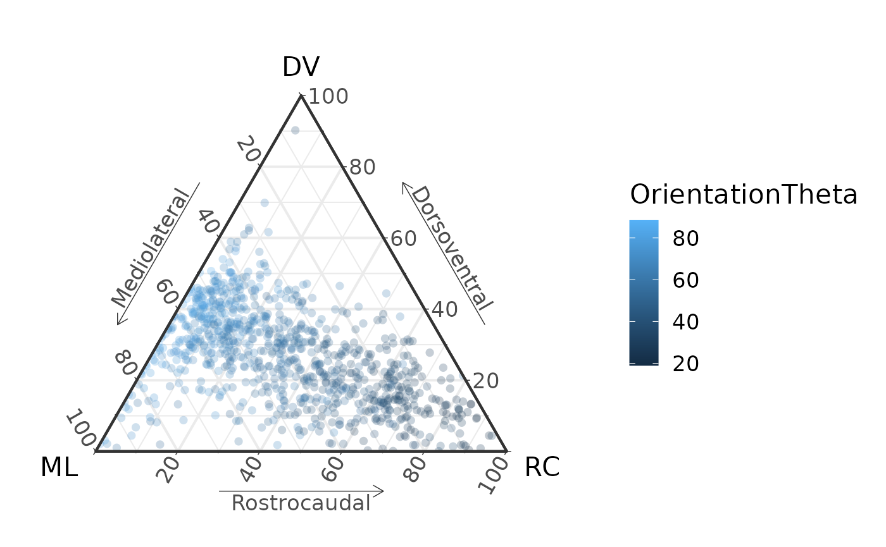
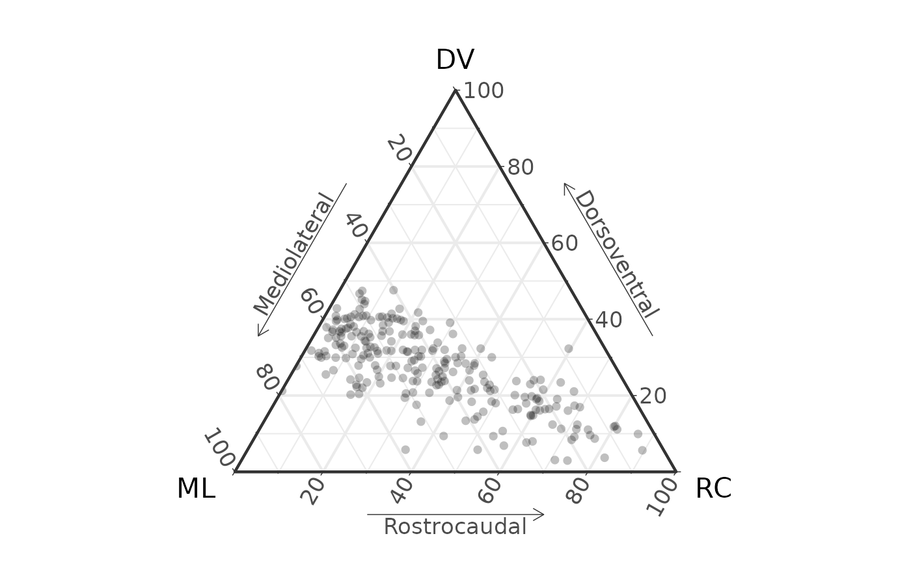

Make a ternary plot from Xfiber data
ternary_plot_xfiber.RmdThe package has two functions for importing data from Avizo Xfiber.
The native “Save as” format from Xfiber is an excel file encoded in XML.
This file can be opened in Excel and resaved as a .xlsx
file. Or simply kept as .xml. The two functions are:
-
read_xfiber_xml(): read the raw.xml -
read_xfiber(): read a resaved Excel file
The easiest option is to just keep the original file. Here we load the starling supracoracoideus data from Sullivan et al., 2019:
library(MuscleTernary)
D <- read_xfiber_xml(system.file("extdata",
"AV069_SC.xml",
package = "MuscleTernary")) |>
mutate(muscle = "SC")
D
#> # A tibble: 8,945 × 11
#> track_num pt_pair x_origin y_origin z_origin x_inse…¹ y_ins…² z_ins…³ Orien…⁴
#> <dbl> <chr> <dbl> <dbl> <dbl> <dbl> <dbl> <dbl> <dbl>
#> 1 0 0,1 11273. 21712. 59873 11536. 21755. 59935. 73.0
#> 2 0 1,2 11536. 21755. 59935. 11767. 21791. 59986. 73.0
#> 3 0 2,3 11767. 21791. 59986. 11998. 21830. 60040. 73.0
#> 4 0 3,4 11998. 21830. 60040. 12227. 21868. 60094. 73.0
#> 5 0 4,5 12227. 21868. 60094. 12487. 21916. 60161. 73.0
#> 6 0 5,6 12487. 21916. 60161. 12787. 21983. 60242. 73.0
#> 7 0 6,7 12787. 21983. 60242. 13102. 22053. 60327. 73.0
#> 8 0 7,8 13102. 22053. 60327. 13434. 22141. 60415. 73.0
#> 9 0 8,9 13434. 22141. 60415. 13750. 22241. 60504. 73.0
#> 10 0 9,10 13750. 22241. 60504. 14082. 22371. 60613. 73.0
#> # … with 8,935 more rows, 2 more variables: OrientationPhi <dbl>, muscle <chr>,
#> # and abbreviated variable names ¹x_insertion, ²y_insertion, ³z_insertion,
#> # ⁴OrientationThetaThere are almost 9,000 points, because each individual track is made
of many sub-segments, which are all returned separately. We also add a
column muscle, which is required by
coords_to_ternary(). For a single muscle, it does not
matter what the value of muscle is, just that the column is
present.
Making ternary plots from Xfiber data is similar from here on.
Convert the coordinates to ternary space and plot with
ggtern().
coords_to_ternary(D) |>
ggtern(aes(x = x, y = y, z = z)) +
geom_point(size = 1, alpha = 0.25, pch = 16) +
labs(x = "ML",
xarrow = "Mediolateral",
y = "DV",
yarrow = "Dorsoventral",
z = "RC",
zarrow = "Rostrocaudal") +
theme_bw(base_size = 16) +
theme_showarrows()We might be interested in color coding the points by angle. We will also randomly select 10% of the points:
D |>
slice_sample(prop = 0.1) |>
coords_to_ternary() |>
ggtern(aes(x = x, y = y, z = z, color = OrientationTheta)) +
geom_point(size = 2, alpha = 0.25, pch = 16) +
labs(x = "ML",
xarrow = "Mediolateral",
y = "DV",
yarrow = "Dorsoventral",
z = "RC",
zarrow = "Rostrocaudal") +
theme_bw(base_size = 16) +
theme_showarrows()
Plotting only the endpoints of tracks
You may not want to plot all 9,000 of the individual track segments.
One approach is to draw a 3D vector from the starting point to the
ending point and reconstruct the orientation of that vector.
find_track_ends() reduces the raw output of
read_xfiber_xml() to a set of vectors where each represents
the endpoints of each track.
Ends <- D |>
find_track_ends()
Ends
#> # A tibble: 235 × 10
#> muscle track_num x_origin y_origin z_origin x_inser…¹ y_ins…² z_ins…³ Orien…⁴
#> <chr> <dbl> <dbl> <dbl> <dbl> <dbl> <dbl> <dbl> <dbl>
#> 1 SC 0 11273. 21712. 59873 26581 31187. 65136. 73.0
#> 2 SC 1 17940 25397. 66452. 29257. 33204. 68119. 83.0
#> 3 SC 2 7106. 17896. 37854. 14036. 25704. 53688. 33.4
#> 4 SC 3 10703. 21624. 42854. 17019. 27151. 57197. 30.3
#> 5 SC 4 6053. 16492. 37108. 26756. 32152. 68733. 39.6
#> 6 SC 5 11624. 22765. 44346. 18291. 28160 59478. 29.5
#> 7 SC 6 6097. 17808. 44433. 18203. 26318. 57680. 48.2
#> 8 SC 7 13334. 24563. 46451. 15528. 26932. 55882. 19.0
#> 9 SC 8 7544. 17677. 38248. 20352. 27327. 60487. 36.5
#> 10 SC 9 5878. 17414. 41933 26669. 33029. 67988. 44.8
#> # … with 225 more rows, 1 more variable: OrientationPhi <dbl>, and abbreviated
#> # variable names ¹x_insertion, ²y_insertion, ³z_insertion, ⁴OrientationTheta
max(Ends$track_num)
#> [1] 234And passing through coords_to_ternary() and
plotting:
Ends |>
coords_to_ternary() |>
ggtern(aes(x = x, y = y, z = z)) +
geom_point(size = 2, alpha = 0.25, pch = 16) +
labs(x = "ML",
xarrow = "Mediolateral",
y = "DV",
yarrow = "Dorsoventral",
z = "RC",
zarrow = "Rostrocaudal") +
theme_bw(base_size = 16) +
theme_showarrows()
Reference
Sullivan, S. P., F. R. McGechie, K. M. Middleton, and C. M. Holliday. 2019. 3D Muscle Architecture of the Pectoral Muscles of European Starling (Sturnus vulgaris). Integr Org Biol 1:oby010